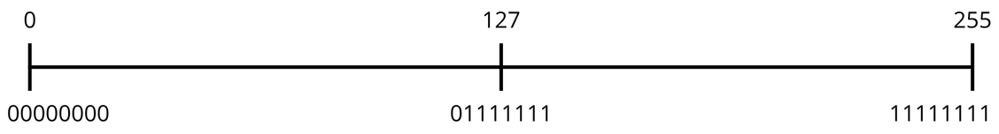
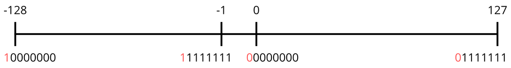

Tipos de Datos Primitivos
Introducción
Ya sabes que todo en el mundo digital se reduce a ceros y unos, a esos bits que se combinan para formar nibbles y bytes. Pero, ¿cómo usa Java estos bits para almacenar cosas como números enteros, números con decimales, o incluso letras? Aquí es donde entran los tipos de datos primitivos.
Los tipos de datos primitivos son los bloques de construcción más básicos para almacenar información en Java. Son como los diferentes tipos de cajas que puedes usar para guardar tus objetos, y cada caja tiene un tamaño y una capacidad específica.
¿Por qué son "primitivos"?
Son "primitivos" porque son los tipos de datos fundamentales que Java entiende directamente, sin necesidad de objetos complejos (más sobre capítulos siguientes). Son la forma más eficiente de almacenar valores simples en la memoria de un computador.
Java tiene 8 tipos de datos primitivos: byte, short, int, long, float, double, char y boolean.
1. Byte
Hasta ahora, hemos visto que con un byte, 8 bits, podemos representar números que van desde el 0 (todos los bits en cero: 00000000) hasta el 255 (todos los bits en uno: 11111111), como muestra el rango de la imagen:
Sin embargo, cuando trabajamos con el tipo de dato byte en Java, la historia cambia un poco. No solo queremos guardar números positivos, sino que también necesitamos la capacidad de representar números negativos. Java y la mayoría de los sistemas modernos eligen una solución más elegante y eficiente para lograrlo: el Complemento a Dos.
Complemento a 2
Con esta estrategia, la forma en que "leemos" y "escribimos" esos 8 bits se modifica.
La clave está en que prestamos el bit más significativo para un uso exclusivo: indicar si el número es negativo o no.
Si ese bit es un 0, sabemos que el número es positivo; si es un 1, es negativo.
Los 7 bits restantes son los que usamos para la "cantidad" del número. Con esto, podemos representar 128 números negativos, el cero y 127 números positivos. Visualmente, este nuevo rango rango se vería así:
